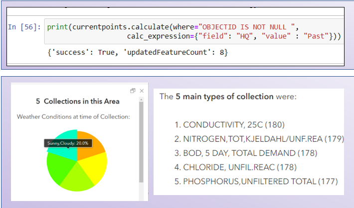

We have put together a water mapping tool with three main componenets: Forms for collecting data from the community,
a dashboard for hosting the data collected from the surveys and a story map to provide more information about the program
and how the community can get involved in citizen science.
-
Easy-to-use data collection tools which will engage the community
while simultaneously collecting both qualitative and quantitative data.
-
Provides the visualization of water quality findings past and present. It distributes the results of the surveys in an easily disgestible format
-
Easy to access resource that acts as the centre of focus for educating community members, highlighting Sustainable Cobourg’s journey.
-
Step 1: ETL
-
Step 2: Form Creation
-
Step 3: Map Layer Preparation
-
Step 4: Dashboard
-
Step 5: StoryMap
ETL: Data was take from the Provincial (Stream) Water Quality Monitoring Network and brought into
MS Access where the relevant tables and fields within those tables were decided on. A table was designed to hold these fields
which were then inserted into it. Finally, this table was brough into ArcGIS Online to create a hosted feature layer
Form Creation: Two surveys were created using Survey123 Connect. In this environment
XLS forms were configured after considering the anticipated end user as well as the type of data that was requested to be collected.
Map Layer Preparation Part 1: The first part of map layer preparation
was gathering the necessary layers to create web maps in ArcGIS Online Environment, the bulk of this was done in ArcGIS Pro. The data was clipped,
projected and symbolized and certain features digitzed. This also included taking raster land use data from the Souther Ontario Land Informaton Resource System)SOLRIS
and converting to vector format. This data was then used to show types of land use in flood prone regions
 Map Layer Preparation Part 2: Once the hosted feature layers were brought into
ArcGIS Online Python API and Arcade were used to make customizations for the maps. For example customization of popups to show the weather conditions
during collection in certain regions or the main types of collection. ArcGIS Python was used in the Notebook environment to update the data in hosted feature
layers to keep data current.
Dashboard: A Dashboard was created to display maps created from the prepped feature layers
as well as the collected survey data. The Dashboard was split into three pages as to not overwhelm the viewer. Arcade was used once again in this environment to
create indicators for flooding based on weekly averages as well as to notify when certain water quality parameters were being measured
in dangerous quantities.
StoryMap: Through the creation of this StoryMap Sustainable Cobourg gained a hub to host data that has been
collected and educate and inform their community about water quality issues.